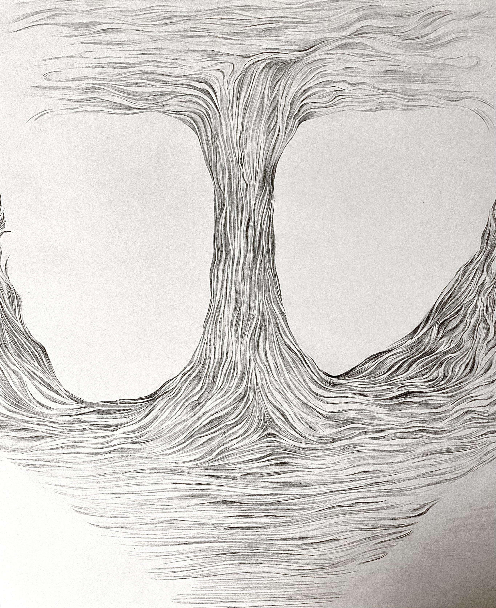
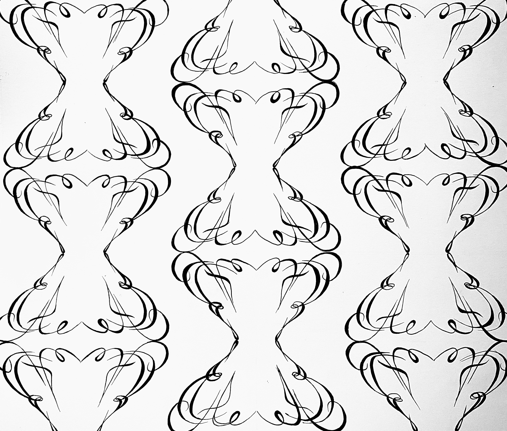
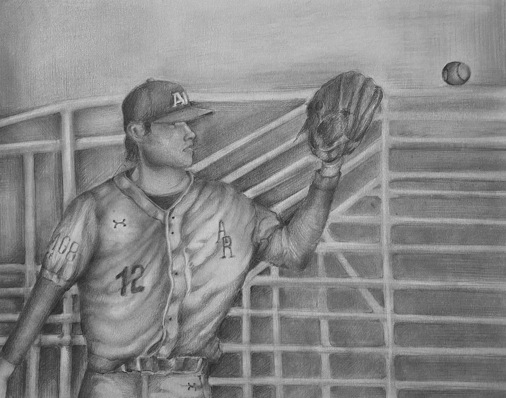
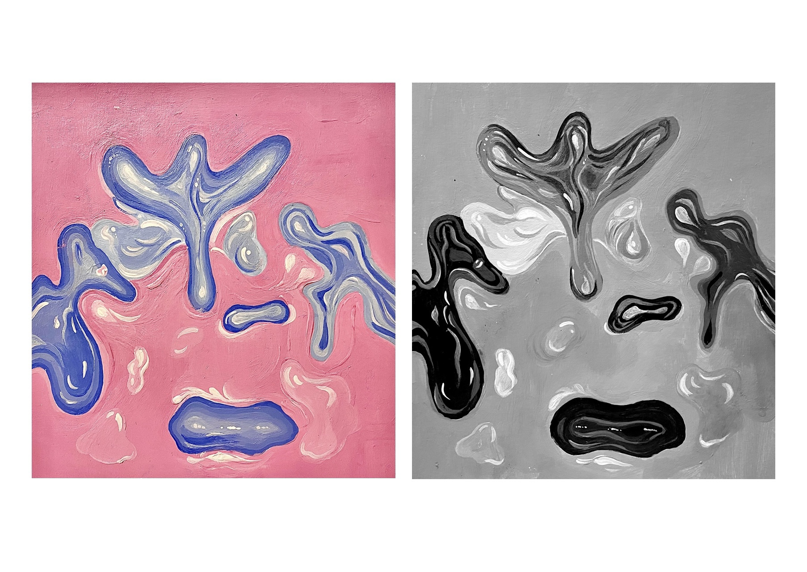
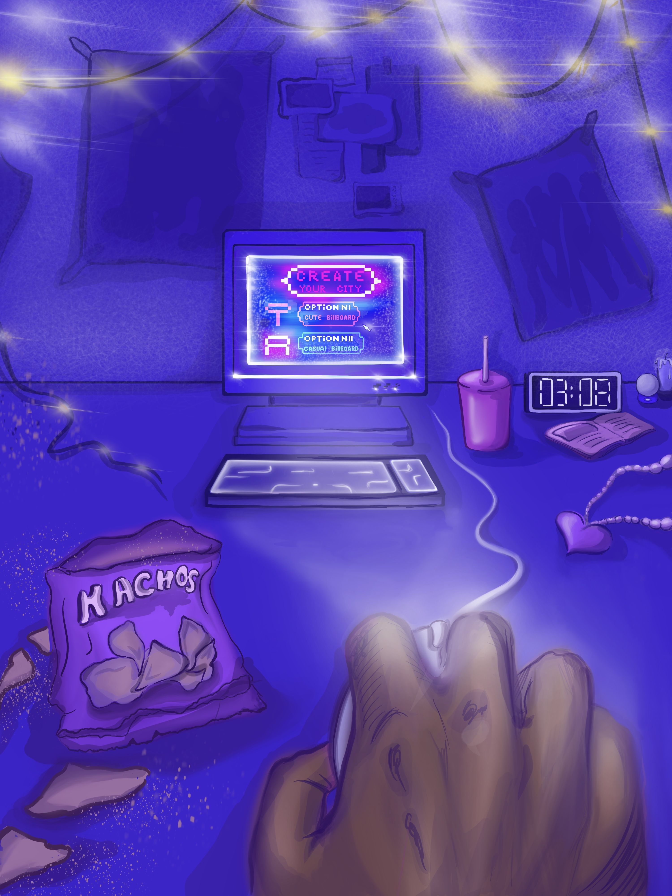

The main purpose of this project was discovering basic design elements already in existence. This work is my favorite.
There are several reasons for that. First, I used my favorite watercolor in one of the pieces. Second, it was interesting to see the berry up close. I never realized that a cherry could look so versatile. And finally, I like the result that I got.

In this project, I learned how to create a dynamic composition that includes negative space, rhythm, focal point, and a variety of line qualities including both thick and thin lines.

Using initials of my name, I created a custom letterform. It helped me to continue to develop an understanding of the relationship between the figure/ground.

This project helped me to enhance my sensitivity to value. It was a big challenge for me,
since the composition is hard. However, I had a lot of fun painting this work.

By doing this assignment, I've learned more about the concept of focal point and emphasis, so I could put this knowledge to practice in a visual way.

I created a thoughtfully composed work of art that confuses the "visual rules" of scale. This assignment was especially fun for me because I'm not used to draw something digitally
As for the idea, it came to me very spontaneously.
I would love to do the same again, but with different subjects.

The purpose of this project is to demonstrate understanding of complimentary, analogous and monochromatic. All three works I painted with watercolors. This task took me the least amount of time in comparison with other projects.
I was able to relax and rest in the process.